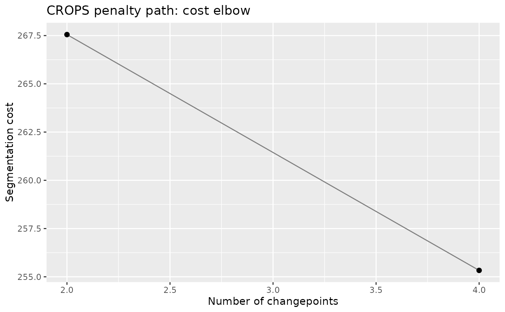
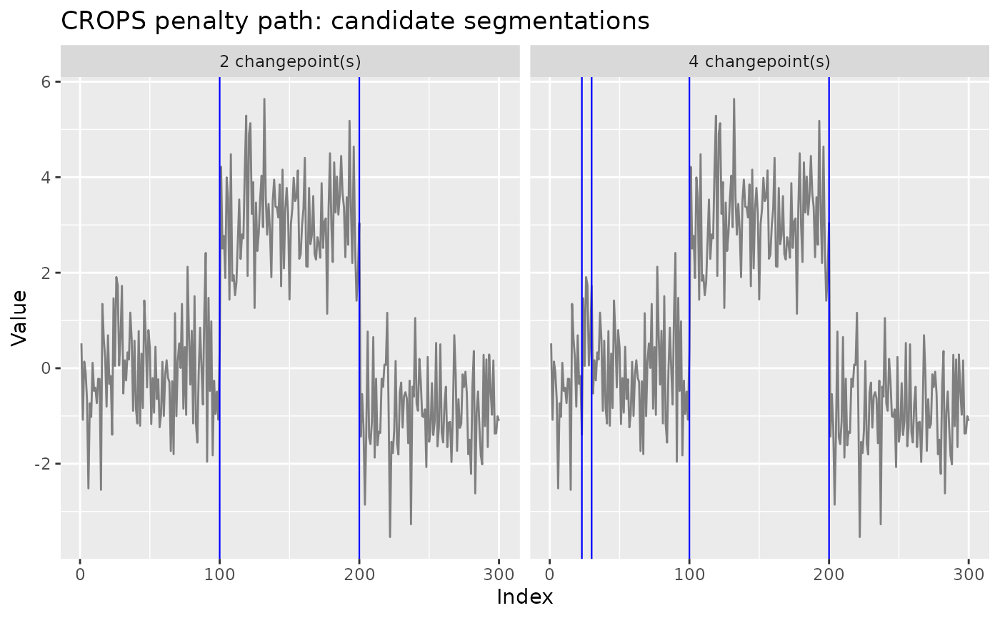

Runs PELT once per distinct optimal segmentation as the penalty
ranges over [pen_min, pen_max], using the CROPS algorithm of
Haynes, Eckley and Fearnhead (2017) as implemented by the
changepoint package. Instead of committing to one penalty, the
analyst sees every segmentation the data admits along the path, together
with its cost, and picks the elbow.
Usage
cpt_crops(
x,
change_in = c("mean", "var", "meanvar"),
pen_min = NULL,
pen_max = NULL,
...
)
# S3 method for class 'ggcpt_path'
autoplot(
object,
type = c("elbow", "path", "segmentations"),
max_facets = 12,
...
)
# S3 method for class 'ggcpt_path'
print(x, ...)
# S3 method for class 'ggcpt_path'
tidy(x, ...)Arguments
- x
For
cpt_crops(), a numeric vector; for theprint()andtidy()methods, aggcpt_pathobject.- change_in
What to detect change in:
"mean","var", or"meanvar". Defaults to"mean".- pen_min, pen_max
The penalty interval to sweep. Default to
log(n)and10 * log(n).- ...
Additional arguments passed to the underlying
changepoint::cpt.mean(),cpt.var(), orcpt.meanvar()call.- object
A
ggcpt_pathobject (forautoplot()).- type
Plot type for
autoplot():"elbow"(cost against number of changepoints, the classic CROPS diagnostic),"path"(number of changepoints against penalty), or"segmentations"(the data faceted by solution, with that solution's changepoints drawn).- max_facets
Maximum number of solutions shown by
type = "segmentations". Defaults to12.
Value
A ggcpt_path object: a list with a solutions tibble
(one row per distinct segmentation: penalty, n_cpts,
cost, and a cpts list-column), the data, and
metadata. Methods: print(), tidy(), and
autoplot() (elbow plot by default;
type = "path" for penalty vs. number of changepoints;
type = "segmentations" for the faceted segmentations).
References
Haynes K, Eckley IA, Fearnhead P (2017). “Computationally efficient changepoint detection for a range of penalties.” Journal of Computational and Graphical Statistics, 26(1), 134–143.
Killick R, Eckley I (2014). “changepoint: An R package for changepoint analysis.” Journal of statistical software, 58(3), 1–19.
Examples
set.seed(2026)
x <- c(rnorm(100), rnorm(100, 3), rnorm(100, -1))
path <- cpt_crops(x)
path
#> ggcpt_path (CROPS penalty path)
#> Change in: mean
#> Penalty range: [5.704, 57.04]
#> Series length: 300
#> Distinct segmentations: 2
#>
#> # A tibble: 2 × 3
#> penalty n_cpts cost
#> <dbl> <int> <dbl>
#> 1 6.11 2 268.
#> 2 5.70 4 255.
ggplot2::autoplot(path)

ggplot2::autoplot(path, type = "segmentations")
